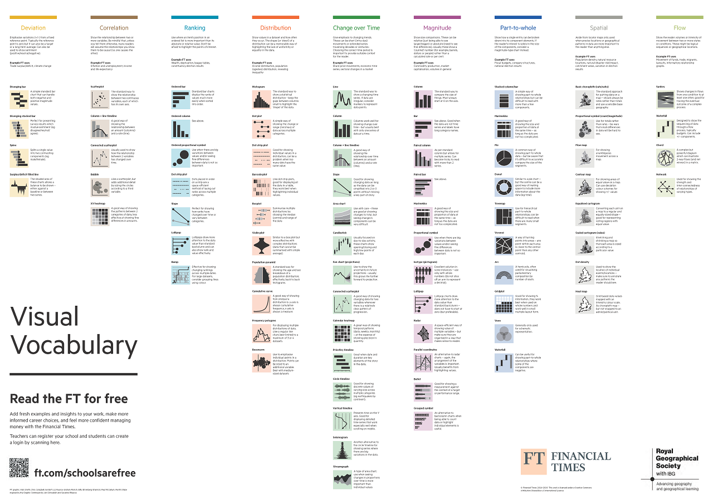

Data Visualization
Stephen Few in Now You See It: Simple Visualization Techniques for Quantitative Analysis defines data visualization as “all types of visual representations that support the exploration, examination, and communication of data”. In essence, it’s about turning raw data into visuals that help us understand and communicate insights more effectively.
Visualizing data allows us to quickly summarize complex information, making it easier to digest and interpret. It helps reveal patterns and trends that might otherwise go unnoticed when examining raw numbers alone—such as those illustrated by Anscombe’s Quartet. By transforming data into visual formats we can make information more accessible, meaningful, and easier to communicate to a wider audience.
Why visualize data?
Data visualization helps us:
- 📈 Identify trends
- 📊 Recognize patterns
- 📉 Quickly interpret information
It also enhances how we communicate findings, making our data more compelling and easier to understand for others.
How should I visualize data?
👥 Know your audience
Before creating a chart, think about your goal:
- Are you explaining a concept or exploring a pattern?
- Does your audience need a simple overview or a detailed analysis?
Tailoring your visuals to your audience ensures your message is clear and impactful.
📊 Choose the right chart for your data
Picking the right chart type is crucial—and sometimes tricky. Luckily, there are great tools to help:
The Financial Times Visual Vocabulary offers a visual taxonomy—or categorized collection of chart types—based kind of relationship or message you want to show (e.g., change over time, distribution, correlation. It helps answer the question: “What’s the best way to visualize this data?”

Abela’s Chart Chooser helps you select a chart based on how many variables (measures and dimensions) you are working with.
Stephanie Evergreen’s Quantitative Chart Chooser, featured on the inside front cover of her book Effective Data Visualization: the Right Chart for the Right Data), helps guide your chart selection based on your communication goal.—whether you’re emphasizing a single number, showing change over time, or comparing data to a benchmark. On the inside back cover, her Qualitative Chart Chooser, along with dedicated chapter in the book, offers practical guidance on how to effectively visualize qualitative data.
🎨 Use colors and fonts wisely
- Limit your color palette to maintain clarity and accessbility.
- Use color to emphasize key point.
- Stick to clean, readable fonts and avoid unnecessary styling.
✂️ Less is better.
- Simplify your chart.
- Remove tick marks and grid lines that do not add value.
- Label data point directly when possible to reduce cognitive load.
- Aim for clarity over complexity — less is often more!
🖱️ Add interactivity (when appropriate)
Interactive tools like Tableau, RShiny, or Power BI allow users to explore data on their own. - Use filters to let users drill down from high-level overviews to detailed views. - Structure interactivity to support meaningful exploration.
🧭 Provide context and clear instructions
- Don’t assume your audience knows how to interpret your chart.
- Include a clear title that communicates the key takeaway.
- Add brief instructions or a help link if your visualization is interactive.
- Provide context for your data source(s).
- Always cite your data source(s).
🧪 Test your visualization
Before sharing, ask a colleague or friend to critique your chart: - Do they understand the message? - Can they use the filters (if interactive)? - Does the visual guide them to the insight you intended?